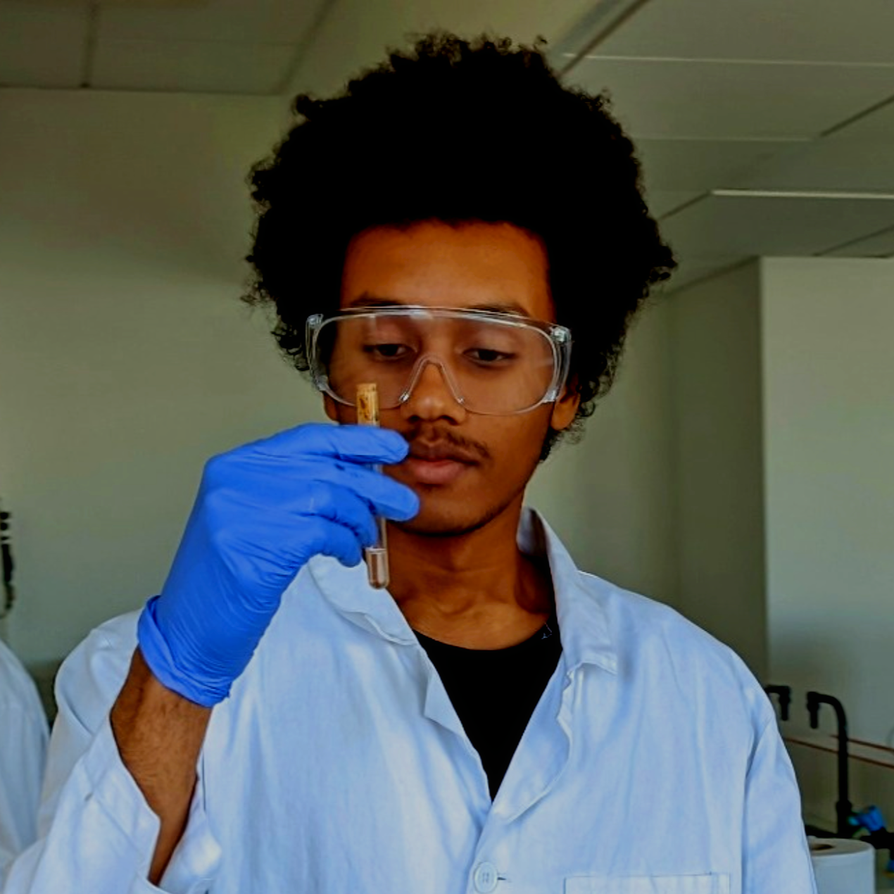

Bienvenue, étudiant en génie chimique, je vous propose d'explorer l'intégralité des installations pilotes à travers une interface unique à 360°.
Lancer l'explorationNaviguez entre les différentes installations via le menu de la visite.
Ce projet a été réalisé pour valoriser les travaux pratiques effectués en Génie Chimique - Génie des Procédés. L'objectif est de permettre une visualisation spatiale des équipements (colonnes, réacteurs, échangeurs) souvent complexes à appréhender sur de simples schémas P&ID.
En centralisant ces vues immersives, je souhaite partager une vision concrète de l'environnement industriel pilote.